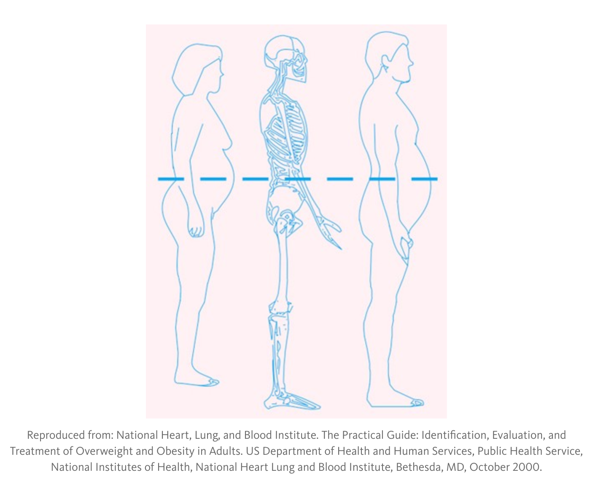
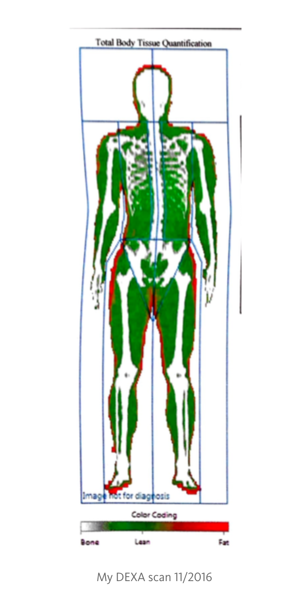
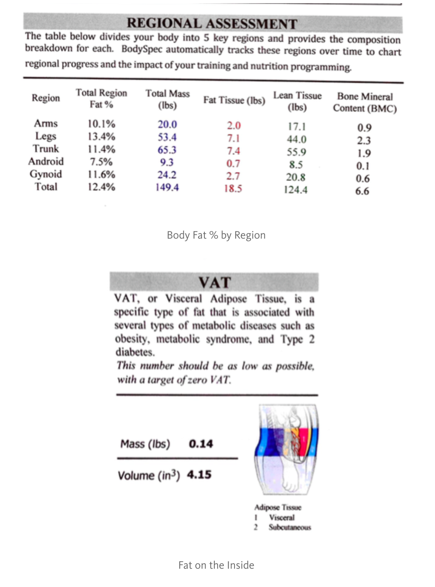

Metrics for Metabolic Fitness
Here is a list of biometrics that I would consider getting to track your progress when starting a new exercise regimen or a new strategy for your diet, like a ketogenic (or low carb high fat) diet or intermittent fasting.
I split it into four main groups of metrics: (1) Energy storage, (2) Energy utilization, (3) Glucose-Insulin axis, (4) and Cardiovascular health. You can view the following 4 topics under my blogs section.
Part I: A Snapshot of Body Composition or Energy Storage
The rough measurements are daily weight and weekly or monthly anthropometric measurements, such as waist, hip, thigh circumferences.
Daily weights. ‘Nuff said. Our weight is a broad measure of our total body mass, but it’s not the whole picture! Our body is composed (among other things) of muscle and adipose (fat) tissue. It can be particularly confusing when your weight stays the same, but you are actually losing an inch around your waist, and simultaneously, gaining lean muscle through exercise. So, don’t obsess over the number. All you can do is focus on progress. I have an electronic scale from Fitbit that sends my weight to my Fitbit app. I usually take this fasted in the mornings, after my morning routines, …like brushing my teeth. It’s nice to see the progress graphed over time.
Monthly anthropometric measurements, such as waist, hip, thigh circumferences. Measure that beer belly, those love handles and them thunder thighs though. Men tend to have an “apple-shaped” distribution and gain weight in their gut region, whereas women tend to have a “pear-shaped” distribution and gain weight in their hips and thighs. Measure the circumference of your waist at the top of the hip and all the way around to your belly button, and measure the circumference of your hips and thighs. Wider waist circumferences are associated with higher mortality.

High intra-abdominal fat is associated with metabolic syndrome and insulin resistance, and greater waist-to-hip ratio is associated with 40% higher risk of shortened telomeres over the next 5 years. Buy a body tape measure off Amazon.com for $5. Measure it once in the beginning, and perhaps every week or month after that. You could be maintaining weight, but losing inches in your waist, thighs, or arms.

DEXA scans. There are multiple ways to measure your body fat percentage, such as using body fat calipers, multifrequency bioelectric impedance, water or air displacement. I won’t get into it here, because they vary in terms of accurancy, variability and impracticality. I would rather tell you about the new gold standard for measuring body fat percentage (dethroning water tank dunking, and short of autopsy), which is the DeXA scan, or dual-emission X-ray absorptiometry. Traditionally, it is used by doctors to measure the signal attenuation of bone to diagnose osteopenia. However, measuring the signal attenuation for fat and muscle is also a fairly accurate and precise method to measure body fat percentage and lean muscle mass! When I looked into it in years past, it was expensive (>$150) and required an MD’s prescription. However, with economies of scale, now it can cost $50–80 in the private sector (bay area!), without a doctor’s prescription.

You may be worried about the radiation. I did. Apparently it is equivalent to eating 4 bananas. (Apparently, any given banana contains about 45 micrograms of radioactive potassium. The more you know…) So, if you already eat bananas, you can consider getting a DEXA. How frequent? If you are trying something new (like changing your diet or exercise regimen) and do it consistently for 3 months, it may be interesting to get it at the beginning and track performance 3 months in. If you are not actively working on your metabolics, frequent and regular scans may be a waste of time, money, and bananas!
Part II: A Snapshot of Energy Utilization
How do we know what energy or fuel (glucose, fat, amino acids) is being used? You can measure ketones, which is made by the liver from fatty acids. You can measure acetoacetate in the urine, and beta-hydroxybutyrate in the blood. It is evidence of fatty acid oxidation or fat burning during fasting or carbohydrate-restricted diets. You cannot burn the fat locked in your beer belly or love handles without going through this process and producing ketones. (This is not on the same order of magnitude as a pathologic condition in uncontrolled diabetes called diabetic ketoacidosis, where ketone levels can be 20–30x.) At first, it’s novel and nice to see yourself in nutritional ketosis, but when you are fat-adapted with regular fasting or eating ketogenic, it’s reassuring but not necessary. Try it out if you aren’t sure.
Try to get a resting metabolic rate and respiratory quotient before starting something new. It uses indirect calorimetry, which uses inspired and expired gases (O2 and CO2)to calculate the types of fuel being oxidized and burned. Each nutrient when burned has a special signature. Fat is 0.70; carbohydrate is 1.00. Most people will have a signature around 0.90, demonstrating a mixed carbohydrate and fat metabolism. That means most people are primarily burning glucose at rest. Why? They condition their bodies to burn glucose at rest by inputting carbohydrates on a regular basis. However, if one is metabolically adapted to fat, the RQ quotient is closer to 0.70, meaning they are burning fat at rest. My own resting metabolic rate is 0.7 over 15 minutes; that means that while I was sitting there, my signature was 100% fat burning at rest. Talk about passive nutrition. You don’t have to do anything to lose fat. Indeed, then, it is as easy as sleeping.
If I had to do it all over again, I would get an RMR before starting on the fasting or ketogenic road (makes sense that I would have been mixed based on my diet), and then get it 3 months after. How frequent? I would consider it at the same frequency as the DEXA. If you are trying something new (like changing your diet or exercise regimen) and do it consistently for 3 months, it may be interesting to get it at the beginning and track performance 3 months in. If you are not actively working on your metabolics, frequent and regular measurements may be a waste of time and money!
Part III: A Snapshot of the Glucose-Insulin Axis
A hemoglobin a1c is a measurement of glycosylated red blood cells. In other words, what percentage of your red blood cells is dipped in sugar? Since red blood cells live in the body for about 90 days and then turnover, this measurement is a good reflection of your blood sugar control in the last 3 months. Measuring a fasting finger stick glucose or prandial glucoses throughout the day is a familiar practice for many diabetics. For insulin-dependent diabetics as well as some biohackers, a continuous glucose monitor gives immediate feedback on the foods that they are consuming. If you are dipping into the 50s and 60s after a long fast, you are probably making ketones. Get an initial baseline measurement and consider quarterly to annual measurements, depending on your regimen.
It is ironic that metabolic syndrome is caused by worsening insulin resistance and hyperinsulinemia, yet we do not routinely measure insulin. Ask for a fasting insulin level. As you do intermittent fasting or eat ketogenic, your insulin sensitivity should improve with time, i.e. increased insulin receptor recruitment and decreased circulating insulin levels. Get an initial baseline measurement and consider quarterly to annual measurements, depending on your regimen.
Part IV: A Snapshot of Cardiovascular Health
What biomarkers are good predictors of heart disease? For many years, I thought that was LDL. A no-brainer, right? Most physicians have been trained to think about LDL as the “bad cholesterol.” However, after further investigation into the topic, this was an oversimplification. I realized that the study of cholesterol and lipoproteins is much more complicated and complex. Total cholesterol is poorly correlated with risk of heart disease, and LDL is only a marginal risk factor for heart disease.
Instead, on the standard lipid panel, the two best predictors of the presence of insulin resistance and risk of heart disease are: (1) HDL, which is considered the “good cholesterol”, and (2) triglycerides, which is a marker of “carbohydrate-induced hyperlipidemia” or increased de novo lipogenesis. In other words, the lower the HDL cholesterol and the higher the triglycerides, the higher the risk of heart disease and insulin resistance. Gerald Reaver’s Syndrome X or metabolic syndrome incorporates these two factors into the criteria, along with elevated blood pressure, elevated fasting blood glucose and abdominal obesity. Get an initial baseline and consider quarterly to annual measurements depending on your regimen..
It gets more complicated. LDL is divided into seven discrete subclasses, each with it’s own atherogenic phenotypes. The smallest and densest subclass of LDL particles are usually associated with low HDL and high triglycerides; they carry a higher risk of heart disease than the larger, “fluffier” subclass. To better qualify LDL, you may ask for LDL particle testing. Consider an initial baseline and consider semi-annual to annual measurements depending on your regimen.